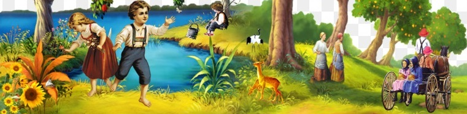

.
هي مؤسسة تعنى برعاية الطفل العراقي وتعليمه
تستقبل الاطفال دون سن المدرسة تعمل
بمنهج منتسوري
و استخدام الارشاد النفسي والتوجيه التربوي لغرض وقائي حيث يستخدم الارشاد باللعب
كوسيلة لتوجيه الطفل ليكون فرد نافع في المجتمع لديه ثقة كاملة بالنفس وتنمية فرد فعال قادر
على تولي العديد من المهام مستقبلاً
ان اهم اهداف المؤسسة
- تقديم الرعاية للأطفال
- تعليم الطفل اهم اساسيات العناية الشخصية
- تعليم الطفل كيفية الاعتماد على النفس
- تدريب الطفل على اساسيات القراءة والكتابة
- التركيز على تنمية الثقة بالنفس
طرق رفع مستوى التحصيل الدراسي، غالبا ما يتأثر الاطفال من البيئة المحيطة بهم، فاذا كانت بيئة سليمة وطبيعة فبالتأكيد هذا سيظهر جليا في تعلم وطريقة تصرف الاطفال، اما اذا كانت بيئة مكهربة فهذا الامر سيؤثر سلبا على تحصيلهم الدراسي
تحسين مستوى التحصيل الدراسي يكون باستخدام العديد من الطرق التي يتم اعتمادها من طرف المعلمين والاسر من اجل من مستوى التحصيل الدراسي عند الاطفال
الاسرة هي المؤسسة التربوية الاولى التي يفتح الطفل عينيه داخلها لاول مرة، حيث يتعلم من امه وابيه واخوته سلوكاته الاولى اللغة وطريقة الكلام واللباس وكل الحيثيات الاخرى، لذلك وجب على الاهل ان يكونو قدوة ابنائهم الاولى وان يحسنو تربيتهم، كي يفرحو بهم بعد وصولهم الى
اعلى المراتب التي لطالما كانو يحلمون بان يحققها ابناؤهم
برنامج رفع التحصيل الدراسي بالمدرسة
المدرسة هي المسؤول الثاني عن التحصيل الدراسي الجيد عند معظم الطلاب الذين يرتادونها، لذلك عليها ان تتقيد بانجاز العديد من المسؤليات
فيديو قصير
اتصل بنا